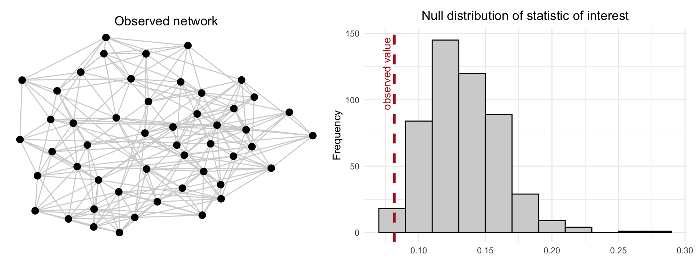
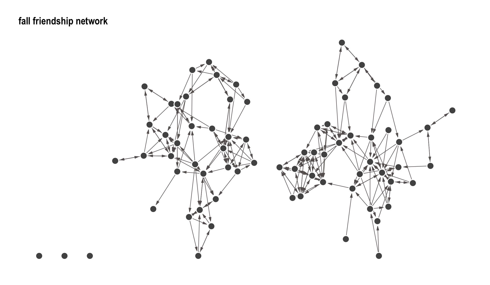
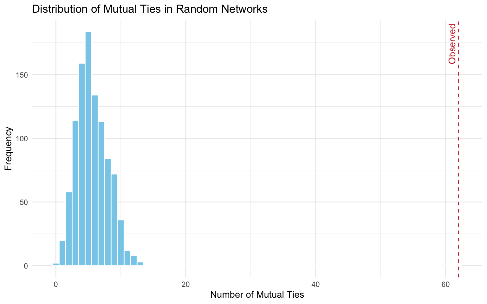

library(statnet)
library(igraph)
library(ggraph)
library(graphlayouts)
library(intergraph)
library(patchwork)
library(networkdata)15 Non-Parametric Methods
A common non-parametric technique is permutation testing, where the observed network is systematically altered—typically by shuffling ties while preserving certain properties, such as the number of connections each node has. This process creates a reference distribution under the null hypothesis, allowing researchers to assess whether observed patterns (like high clustering or assortativity) are statistically significant or could have arisen by chance.
Importantly, in non-parametric frameworks, p-values retain their traditional interpretation. They represent the probability of observing network features as extreme as those found in the data if the null hypothesis were true. This familiar statistical grounding makes non-parametric tests both intuitive and flexible.
Non-parametric methods are particularly valuable during the exploratory phase of research, for validating parametric models, and in contexts where theoretical models are either undeveloped or poorly understood.
15.1 Packages Needed for this Chapter
15.2 Conditional Uniform Graph Distributions (CUGs)
One widely used non-parametric approach is the Conditional Uniform Graph Distribution (CUG). CUGs define a reference distribution of graphs generated uniformly at random, but conditioned on one or more fixed characteristics of the observed network, such as the number of nodes, total number of edges, or degree distribution. By preserving these basic structural features, CUGs enable researchers to assess whether a more complex pattern (e.g., high reciprocity, homophily, or transitivity) is likely to have arisen by chance given the observed constraints.
Why do we do this? Well, in network analysis, statistical inference relies on some form of randomness; we assume that if a structure emerges more often than we would expect under random conditions, it likely reflects an underlying social mechanism. A CUG distribution formalizes this by defining a uniform distribution over a set of graphs, where each graph satisfies a fixed constraint, such as the same number of edges, node degrees, or dyadic relationships.
For example, if a network displays unusually high clustering, a CUG test can evaluate whether this is statistically exceptional or simply a byproduct of the network’s size and density. By comparing the observed statistic to the distribution of values from randomly generated but structurally constrained networks, researchers can determine the significance of the observed pattern. CUGs are especially useful when a full parametric model is unavailable, difficult to specify, or when the goal is to control for known network features while testing specific structural hypotheses.
Several types of CUGs can be defined:
- 𝒰 |E(L): All graphs with the same number of edges as the observed graph.
- 𝒰 |d: All graphs with the same degree distribution \(d = (d_1, d_2, ..., d_n)\).
- 𝒰 |MAN: All graphs with the same dyad census (i.e., counts of mutual, asymmetric, and null ties).
For example, in a CUG with fixed density (number of edges), each graph that meets the constraint is equally probable. Graphs that do not satisfy the constraint (e.g., different number of ties) are assigned a probability of zero. This results in a null model that is tightly defined and suitable for hypothesis testing.
15.3 Hypothesis Testing Procedure
The process follows classical null hypothesis testing logic:
- Null Hypothesis (\(H_{0}\)): The observed network is drawn from a CUG model that preserves a given constraint (e.g., edge count).
- Alternative Hypothesis (\(H_{1}\)): The observed network structure is not typical under this model and thus suggests a non-random social mechanism.
To test \(H_0\) we follow the below steps:
- Define a summary statistic (e.g., degree centralization, reciprocity or transitivity).
- Generate a large number of networks from the CUG distribution.
- Compute the statistic for each simulated network.
- Compare the observed statistic to the simulated distribution for that statistic.
If the observed value lies in the extreme tails (e.g., below the 2.5th percentile or above the 97.5th), we reject \(H_{0}\) at the corresponding 5% significance level, concluding that the observed structure likely reflects a genuine social mechanism rather than random chance. Since the tests are actually non-parametric (Monte Carlo) tests, we can estimate the \(p\)-value as the proportion of simulated test statistics that are as extreme or more extreme than the observed value. This provides a data-driven way to assess whether the observed statistic is likely under the null model, allowing for hypothesis testing without strong distributional assumptions.
The process is visualized in Figure 15.1 where the left panel shows the observed network, while the right panel displays the null distribution of the statistic based on 500 randomly generated graphs that preserve the same number of nodes and edges. The dashed red line indicates the observed value. If this value lies in the tail of the distribution, it suggests the observed structure is unlikely to have arisen by chance under the null model.

15.4 Running Example
We will use a running example, namely Coleman (Coleman 1964) which is available as graph object in the networkdata package and as an array in statnet (or more specifically sna). We will use these interchangeably depending on the function and package used for our analysis. The data consists of self-reported friendship ties among 73 boys in a small high school in Illinois over the 1957-1958 academic year. Networks of reported ties for all 73 informants are provided for two time points (fall and spring). We will only focus on the fall network here, which we load and visualize:
# Load data as graph object from networkdata and extract the fall network
coleman_g <- networkdata::coleman[[1]]
# plot using gggraph
ggraph(coleman_g, layout = "stress") +
geom_edge_link(edge_colour = "#666060", end_cap = circle(9,"pt"),
n = 2, edge_width = 0.4, edge_alpha = 1,
arrow = arrow(angle = 15,
length = unit(0.1, "inches"),
ends = "last", type = "closed")) +
geom_node_point(fill = "#525252",colour = "#FFFFFF",
size = 5, stroke = 1.1, shape = 21) +
theme_graph() +
ggtitle("fall friendship network") +
theme(legend.position = "none")
We also prepare the network as a network pbject??
15.5 Uniform Graph Distribution Given Expected Density
Here, we simulate graoh distributions while keeping the expected frequency from the observed network fixed. We aim to answer the follwoing quesiton: do we observed significantly many more reciporcal ties in our observed than what is expected by pure chance given random networks of the same expected density? So the statistic of interested here is number of reciprocal ties which we obtain from dyad census:
dyad_census(coleman_g)$mut
[1] 62
$asym
[1] 119
$null
[1] 2447# alterantiver one can also use the below
sum(which_mutual(coleman_g)) / 2 [1] 62The number of reciprocal ties is equal to 62. In order to compute this density, we can use the igraph function edge_density().
edge_density(coleman_g)[1] 0.04623288Further we save number of nodes and edges of the observed network:
vcount(coleman_g)[1] 73ecount(coleman_g)[1] 243To simulate the null distribution we use the function rgraph from the sna package. We simulate 1000 random networks with the parameters specified above.
sim_nets_dens <- rgraph(n = vcount(coleman_g), m = 1000,
tprob = edge_density(coleman_g), mode = "digraph")Note that the output consists of adjacency matrices representing 1000 randomly generated networks. While each individual simulated network may not contain exactly the same number of edges as the observed network, they are stochastically equivalent in terms of overall density.
We then compute the number of reciprocal (mutual) ties in each simulated network and visualize the resulting distribution under the null model of random tie allocation. A red dashed line is included in the plot to indicate the number of mutual ties observed in the actual network (62), highlighting how it compares to the distribution expected by chance.
# Define mutual tie counting function
count_mutual <- function(adj_matrix) {
g <- graph_from_adjacency_matrix(adj_matrix, mode = "directed")
sum(which_mutual(g)) / 2
}
# Generate list of adjacency matrices from current structure
adj_list <- lapply(1:dim(sim_nets_dens)[1], function(i) sim_nets_dens[i,,])
# Compute mutual tie count for each simulated network
mutual_counts <- sapply(adj_list, count_mutual)
# Create data frame for plotting
mutual_df <- data.frame(mutual_ties = mutual_counts)
# Plot with ggplot2
ggplot(mutual_df, aes(x = mutual_ties)) +
geom_histogram(binwidth = 1, fill = "skyblue", color = "white") +
geom_vline(xintercept = dyad_census(coleman_g)$mut, color = "firebrick3", linetype = "dashed") +
annotate("text", x = dyad_census(coleman_g)$mut, y = Inf, label = "Observed",
vjust = -0.5, hjust = 1.1, color = "firebrick3", angle = 90) +
labs(title = "Distribution of Mutual Ties in Random Networks",
x = "Number of Mutual Ties",
y = "Frequency") +
theme_minimal()
As shown in the plot, the observed number of mutual ties falls far in the right tail of the distribution. This indicates a substantial deviation from what would be expected under random tie formation. This can be interpreted as follows:
If ties in the network were allocated completely at random—while preserving the overall density—it would be highly unlikely to observe as many reciprocal ties as we do in the actual network.
Stated more formally, this analysis serves as a test of the following null hypothesis:
\(H_0\): The number of mutual ties in the observed network does not differ from what would be expected under random tie formation, given the observed network density.
\(H_1\): The observed number of mutual ties is significantly greater than expected by chance, indicating a tendency toward reciprocity beyond what density alone would predict.
Since the observed number of mutual ties falls far in the right tail of the simulated distribution, we see a clear and substantial deviation from the null model. Therefore, we reject the null hypothesis, concluding that the observed network exhibits significantly more reciprocity than would be expected by random chance alone. This indicates a strong tendency for mutual connections in the network that is not explained by density alone.
In order to compute the \(p\)-value, we compare the observed value to the distribution from the simulated null model:
# Empirical p-value (proportion of simulated mutual counts >= observed)
p_value <- mean(mutual_counts >= dyad_census(coleman_g)$mut)
p_value[1] 0Unsurprisingly, this value is equal to zero, as we do not have any part of the distribution ranging over the observed count. However, \(p\)-values from Monte Carlo tests are never exactly 0, but rather “less than 1 / number of simulations”, so a more correct statement would be that
\(p\) < 0.001 (based on 1,000 simulations) providing very strong evidence against the null hypothesis.